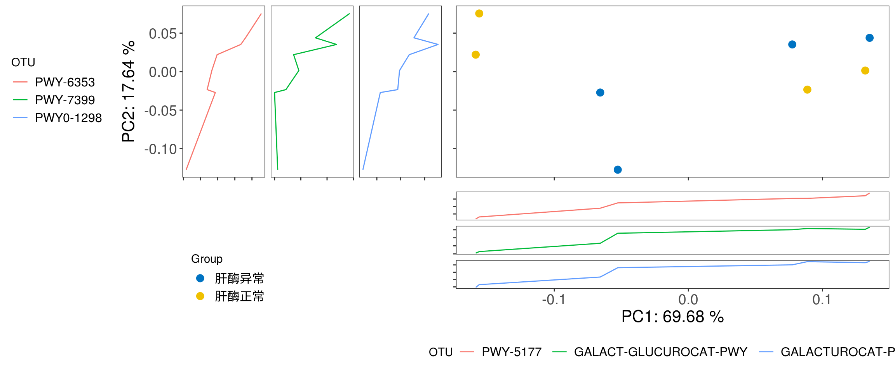

Chapter 2 Functional Analysis of Metacyc database
This demo provides guidance to standard data analysis of pathway data. Humman2 is used to identify pathways with MetaCyc database.
There are five 7 steps in standard MGS data anlaysis process:
- load Humman2 output to Rstudio for analysis
- remove unintegrated and unmapped pathways from dataset
- beta diversity
- Permanova test
- Prevalance filtering
- differential analysis
- bacteria contribution to pathway
- reaction(enzyme) and gene to pathway
2.1 Environment setup
knitr::opts_chunk$set(warning = FALSE, message = FALSE,out.width="100%")
library(XMAS)
library(xviz)
library(data.table)
library(plotly)
library(xlsx)
library(magrittr)
source("/share/projects/SOP/Functional_Analysis/Tongbangzhuo/Phase1/Metacyc/RScript/permanova.R")
source("/share/projects/SOP/Functional_Analysis/Tongbangzhuo/Phase1/Metacyc/RScript/pathway2gene.R")2.2 load data
- metadata
metadata <- read.table("/home/xuxiaomin/project/standardized_analytics_workflow_R_function/demo_data/Funtional/metadata.txt",header = TRUE,stringsAsFactors = FALSE) %>%
mutate(seqid2 = seqid) %>% # keep seqid in the metadata
column_to_rownames("seqid2")
rownames(metadata)## [1] "4371" "4368" "4416" "4367" "4373" "4372" "4389" "4410" "4412" "4413" "4386" "4391" "4390"- Humann2: the unstratified pathway table generated by hummann2 is used for analysis first.
pathwaydata <- read_delim("/home/xuxiaomin/project/standardized_analytics_workflow_R_function/demo_data/Funtional/merged_relab_pathabundance_unstratified.tsv", delim = "\t") %>%
mutate(`# Pathway` = str_split_fixed(`# Pathway`, ":", 2)[,1]) %>% # do not edit
column_to_rownames("# Pathway") %>% # do not edit
t() %>% as.data.frame() %>% # do not edit
rownames_to_column("seq_id") %>% # do not edit
mutate(seq_id=str_extract(seq_id, "\\d{4}")) %>% # do not edit
filter(seq_id %in% metadata$seqid) %>% # *** only keep samples in metadata, edit if needed ***
column_to_rownames("seq_id") %>% # do not edit
t() %>% as.data.frame() %>% # do not edit
rownames_to_column("pathway") %>% # do not edit
filter(rowSums(.[,-1]) > 0) %>% # do not edit
column_to_rownames("pathway") # do not edit
colnames(pathwaydata)## [1] "4367" "4368" "4371" "4372" "4373" "4386" "4389" "4390" "4391" "4410" "4412" "4413" "4416"2.3 Remove unppaed pathways
2.4 Plot Beta diversity
In this demo, we plot PCoA with Bray-Curtis distance as example.
# plot_beta_diversity is a fucntion in XVIZ working on calculating the beta diversity distance and visualzing output
# input of plot_beta_diversity is a phyloseq object
phyloseq(otu_table(pathway.clean, taxa_are_rows = T), sample_data(metadata)) %>%
plot_beta_diversity(feature = "Group",add_pc1 = TRUE, add_pc2 = TRUE)
2.5 Permanova test
The first output is dispersion test and the second output is PERMANOVA test.
# run_permanova_betadisp is a function in XMAS working on doing dispersion test and PERMANOVA test.
phyloseq(otu_table(pathway.clean, taxa_are_rows = T), sample_data(metadata)) %>%
run_permanova_betadisp(vars = "Group")## $betadisp_res
## variable p_value analysis
## 1 Group 0.101 beta_dispersion_permutation999
##
## $permanova_res
## variable p_value R2 analysis
## 1 Group 0.157 0.1082203 permanova_permutation9992.6 Differential analysis(DA)
2.6.1 Preprocess before DA
We would remove pathways apperaing in less than max(2 , 5% of samples) from data set before doing analysis.
pathway.filter <- XMAS::filter_prevalence(otu_table = pathway.clean,
metadata = metadata.clean,
threshold = 0.05,
taxa_are_rows = TRUE)
nrow(pathway.clean)## [1] 429## [1] 3672.7 Bacteria contributing to differential pathways
options(stringsAsFactors = FALSE)
pathway_stratified <- read_delim("/share/projects/SOP/Functional_Analysis/Tongbangzhuo/Phase1/Metacyc/Demodata/merged_relab_pathabundance_stratified.pcl", delim = "\t") %>%
column_to_rownames("pathwayID") %>%
t() %>%
as.data.frame() %>%
rownames_to_column("seq_id") %>%
mutate(seq_id=str_extract(seq_id, "\\d{4}")) %>%
filter(seq_id %in% metadata$seqid) %>%
column_to_rownames("seq_id") %>%
t() %>%
as.data.frame() %>%
.[apply(.>0, 1, any),] %>%
# .[apply(.>0,1, function(x) sum(x) > 4),] %>%
rownames_to_column("pathwayID") %>%
mutate(PathwayID=str_split_fixed(pathwayID,":",2)[,1]) %>%
mutate(Introduce=str_split_fixed(str_split_fixed(pathwayID,":",2)[,2],"\\|",2)[,1]) %>%
mutate(Genus=str_split_fixed(str_split_fixed(pathwayID,"\\|",2)[,2], "\\.", 2)[,1]) %>%
mutate(Species=str_split_fixed(str_split_fixed(pathwayID,"\\|",2)[,2], "\\.", 2)[,2]) %>%
mutate(Species=str_replace(Species, "s__", ""))
pathway_list <- pathway_stratified %>% as.data.frame() %>%
dplyr::select(PathwayID, Species) %>%
filter((!str_detect(PathwayID, "UNINTEGRATED")) & (PathwayID %in% da_pathway$id) & Species!="") %>%
pivot_wider(names_from = "Species",values_from = "Species") %>%
column_to_rownames("PathwayID") %>% .[apply(.,1,function(x) sum(!is.na(x))) >= 2,] %>%
rownames()
read_delim("/home/xuxiaomin/project/standardized_analytics_workflow_R_function/demo_data/Funtional/merged_relab_pathabundance_stratified.tsv", delim = "\t") %>%
column_to_rownames("# Pathway") %>%
t() %>%
as.data.frame() %>%
rownames_to_column("seqid") %>%
mutate(seqid=str_extract(seqid, "\\d{4}")) %>%
merge(metadata,., by="seqid") %>%
filter(seqid %in% metadata$seqid) %>%
column_to_rownames("seqid") %>%
t() %>%
as.data.frame() %>%
rownames_to_column("pathwayID") %>%
write.table(.,"/share/projects/SOP/Functional_Analysis/Tongbangzhuo/Phase1/Metacyc/Demodata/merged_relab_pathabundance_stratified.pcl", row.names = FALSE, quote = FALSE, sep = "\t")
for (i in pathway_list) {
commond_text <- "python3.5 ~/tongbangzhuo_Xbiome1/Script/humann2_barplot.py --input /home/xuxiaomin/project/standardized_analytics_workflow_R_function/demo_data/Funtional/merged_relab_pathabundance_stratified.pcl --focal-feature ${pathwayID} --focal-metadatum Group --last-metadatum Group -d 8 4 --output /share/projects/SOP/Functional_Analysis/Tongbangzhuo/Phase1/Metacyc/Demodata/pathway_bacteria/${pathwayID}.png -e 0.8"
commond_text <- stringr::str_interp(commond_text, list(pathwayID = i))
system(commond_text)
}2.8 Plot Bacteria Contribution
image_path <- NULL
# for (image in list.files("/share/projects/SOP/Functional_Analysis/Tongbangzhuo/Phase1/Metacyc/Demodata/pathway_bacteria/")){
# if (str_detect(image,".png$")){
# image_path <- c(image_path, paste0("/share/projects/SOP/Functional_Analysis/Tongbangzhuo/Phase1/Metacyc/Demodata/pathway_bacteria/",image))
# }
# }
image_path <- system('ls /share/projects/SOP/Functional_Analysis/Tongbangzhuo/Phase1/Metacyc/Demodata/pathway_bacteria/*.png', intern = TRUE)
## In the graph(s) below, green KO are those KOs enriched in GroupB, red KO are those KOs enriched in GroupA
knitr::include_graphics(image_path)


2.9 Gene and Ensyme involed in differential pathways
2.9.1 load tables to mapping pathway to gene and enzyme
# gene family
my_genefamily = read.table("/home/xuxiaomin/project/standardized_analytics_workflow_R_function/demo_data/Funtional/metacyc_data/all.genefamilies.tsv",sep="\t")
my_genefamily_unstratified = my_genefamily %>% filter(!str_detect(V1,"[|]"))
metacyc_pwy_name = read_delim("/home/xuxiaomin/project/standardized_analytics_workflow_R_function/demo_data/Funtional/metacyc_data/map_metacyc-pwy_name.txt",delim = "\t",col_names = FALSE)2.10 Session Info
## ─ Session info ────────────────────────────────────────────────────────────────────────────────────────────────────────────────────────────────────────────────────
## setting value
## version R version 3.6.3 (2020-02-29)
## os Ubuntu 16.04.7 LTS
## system x86_64, linux-gnu
## ui RStudio
## language (EN)
## collate en_IN.UTF-8
## ctype en_IN.UTF-8
## tz Asia/Hong_Kong
## date 2022-06-29
## rstudio 1.1.419 (server)
## pandoc 2.7.3 @ /usr/bin/ (via rmarkdown)
##
## ─ Packages ────────────────────────────────────────────────────────────────────────────────────────────────────────────────────────────────────────────────────────
## ! package * version date (UTC) lib source
## abind 1.4-5 2016-07-21 [1] CRAN (R 3.6.3)
## ade4 1.7-17 2021-06-17 [1] CRAN (R 3.6.3)
## ALDEx2 1.18.0 2019-10-29 [1] Bioconductor
## annotate 1.64.0 2019-10-29 [1] Bioconductor
## AnnotationDbi * 1.48.0 2019-10-29 [1] Bioconductor
## ape 5.5 2021-04-25 [1] CRAN (R 3.6.3)
## assertthat 0.2.1 2019-03-21 [2] CRAN (R 3.6.3)
## backports 1.4.1 2021-12-13 [1] CRAN (R 3.6.3)
## base64enc 0.1-3 2015-07-28 [2] CRAN (R 3.6.3)
## bayesm 3.1-4 2019-10-15 [1] CRAN (R 3.6.3)
## biglm 0.9-2.1 2020-11-27 [1] CRAN (R 3.6.3)
## Biobase * 2.46.0 2019-10-29 [2] Bioconductor
## BiocGenerics * 0.32.0 2019-10-29 [2] Bioconductor
## BiocManager 1.30.16 2021-06-15 [1] CRAN (R 3.6.3)
## BiocParallel * 1.20.1 2019-12-21 [2] Bioconductor
## biomformat 1.14.0 2019-10-29 [1] Bioconductor
## Biostrings 2.54.0 2019-10-29 [1] Bioconductor
## bit 4.0.4 2020-08-04 [1] CRAN (R 3.6.3)
## bit64 4.0.5 2020-08-30 [1] CRAN (R 3.6.3)
## bitops 1.0-7 2021-04-24 [1] CRAN (R 3.6.3)
## blob 1.2.2 2021-07-23 [1] CRAN (R 3.6.3)
## bookdown 0.24 2021-09-02 [1] CRAN (R 3.6.3)
## brio 1.1.3 2021-11-30 [2] CRAN (R 3.6.3)
## broom 0.7.12 2022-01-28 [1] CRAN (R 3.6.3)
## bslib 0.3.1 2021-10-06 [1] CRAN (R 3.6.3)
## cachem 1.0.5 2021-05-15 [1] CRAN (R 3.6.3)
## callr 3.7.0 2021-04-20 [2] CRAN (R 3.6.3)
## car 3.0-12 2021-11-06 [1] CRAN (R 3.6.3)
## carData 3.0-4 2020-05-22 [1] CRAN (R 3.6.3)
## caTools 1.18.2 2021-03-28 [1] CRAN (R 3.6.3)
## cellranger 1.1.0 2016-07-27 [1] CRAN (R 3.6.3)
## checkmate 2.0.0 2020-02-06 [1] CRAN (R 3.6.3)
## circlize * 0.4.13 2021-06-09 [1] CRAN (R 3.6.3)
## cli 3.1.0 2021-10-27 [1] CRAN (R 3.6.3)
## clue 0.3-59 2021-04-16 [1] CRAN (R 3.6.3)
## cluster 2.1.0 2019-06-19 [2] CRAN (R 3.6.3)
## codetools 0.2-16 2018-12-24 [2] CRAN (R 3.6.3)
## colorspace 2.0-2 2021-06-24 [1] CRAN (R 3.6.3)
## ComplexHeatmap * 2.2.0 2019-10-29 [1] Bioconductor
## compositions 2.0-2 2021-07-14 [1] CRAN (R 3.6.3)
## cowplot * 1.1.1 2020-12-30 [1] CRAN (R 3.6.3)
## crayon 1.5.0 2022-02-14 [1] CRAN (R 3.6.3)
## dada2 * 1.14.1 2020-02-22 [1] Bioconductor
## data.table * 1.14.0 2021-02-21 [1] CRAN (R 3.6.3)
## DBI 1.1.1 2021-01-15 [1] CRAN (R 3.6.3)
## dbplyr 2.1.1 2021-04-06 [1] CRAN (R 3.6.3)
## DelayedArray * 0.12.3 2020-04-09 [2] Bioconductor
## DelayedMatrixStats 1.8.0 2019-10-29 [1] Bioconductor
## DEoptimR 1.0-9 2021-05-24 [1] CRAN (R 3.6.3)
## desc 1.4.1 2022-03-06 [2] CRAN (R 3.6.3)
## DESeq2 * 1.26.0 2019-10-29 [1] Bioconductor
## devtools 2.4.3 2021-11-30 [1] CRAN (R 3.6.3)
## digest 0.6.29 2021-12-01 [1] CRAN (R 3.6.3)
## dplyr * 1.0.6 2021-05-05 [1] CRAN (R 3.6.3)
## edgeR 3.28.1 2020-02-26 [1] Bioconductor
## ellipsis 0.3.2 2021-04-29 [1] CRAN (R 3.6.3)
## EnhancedVolcano * 1.4.0 2019-10-29 [1] Bioconductor
## evaluate 0.15 2022-02-18 [2] CRAN (R 3.6.3)
## fansi 1.0.2 2022-01-14 [1] CRAN (R 3.6.3)
## farver 2.1.0 2021-02-28 [2] CRAN (R 3.6.3)
## fastmap 1.1.0 2021-01-25 [1] CRAN (R 3.6.3)
## fdrtool 1.2.17 2021-11-13 [1] CRAN (R 3.6.3)
## forcats * 0.5.1 2021-01-27 [1] CRAN (R 3.6.3)
## foreach 1.5.2 2022-02-02 [2] CRAN (R 3.6.3)
## foreign 0.8-75 2020-01-20 [2] CRAN (R 3.6.3)
## formatR 1.12 2022-03-31 [2] CRAN (R 3.6.3)
## Formula 1.2-4 2020-10-16 [1] CRAN (R 3.6.3)
## fs 1.5.2 2021-12-08 [1] CRAN (R 3.6.3)
## futile.logger * 1.4.3 2016-07-10 [2] CRAN (R 3.6.3)
## futile.options 1.0.1 2018-04-20 [2] CRAN (R 3.6.3)
## genefilter 1.68.0 2019-10-29 [1] Bioconductor
## geneplotter 1.64.0 2019-10-29 [1] Bioconductor
## generics 0.1.2 2022-01-31 [1] CRAN (R 3.6.3)
## GenomeInfoDb * 1.22.1 2020-03-27 [2] Bioconductor
## GenomeInfoDbData 1.2.2 2020-08-24 [2] Bioconductor
## GenomicAlignments 1.22.1 2019-11-12 [1] Bioconductor
## GenomicRanges * 1.38.0 2019-10-29 [2] Bioconductor
## getopt 1.20.3 2019-03-22 [1] CRAN (R 3.6.3)
## GetoptLong 1.0.5 2020-12-15 [1] CRAN (R 3.6.3)
## ggExtra * 0.9 2019-08-27 [1] CRAN (R 3.6.3)
## ggplot2 * 3.3.5 2021-06-25 [1] CRAN (R 3.6.3)
## ggpubr * 0.4.0 2020-06-27 [1] CRAN (R 3.6.3)
## ggrepel * 0.9.1 2021-01-15 [2] CRAN (R 3.6.3)
## ggsci * 2.9 2018-05-14 [1] CRAN (R 3.6.3)
## ggsignif 0.6.3 2021-09-09 [1] CRAN (R 3.6.3)
## glmnet 4.1-2 2021-06-24 [1] CRAN (R 3.6.3)
## GlobalOptions 0.1.2 2020-06-10 [1] CRAN (R 3.6.3)
## glue 1.6.1 2022-01-22 [1] CRAN (R 3.6.3)
## GMPR 0.1.3 2021-05-17 [1] local
## gplots 3.1.1 2020-11-28 [1] CRAN (R 3.6.3)
## graph 1.64.0 2019-10-29 [1] Bioconductor
## gridExtra 2.3 2017-09-09 [2] CRAN (R 3.6.3)
## gtable 0.3.0 2019-03-25 [2] CRAN (R 3.6.3)
## gtools 3.9.2 2021-06-06 [1] CRAN (R 3.6.3)
## haven 2.4.1 2021-04-23 [1] CRAN (R 3.6.3)
## highr 0.9 2021-04-16 [1] CRAN (R 3.6.3)
## Hmisc 4.5-0 2021-02-28 [1] CRAN (R 3.6.3)
## hms 1.1.1 2021-09-26 [1] CRAN (R 3.6.3)
## htmlTable 2.3.0 2021-10-12 [1] CRAN (R 3.6.3)
## htmltools 0.5.2 2021-08-25 [1] CRAN (R 3.6.3)
## htmlwidgets 1.5.4 2021-09-08 [2] CRAN (R 3.6.3)
## httpuv 1.6.1 2021-05-07 [1] CRAN (R 3.6.3)
## httr 1.4.3 2022-05-04 [2] CRAN (R 3.6.3)
## hwriter 1.3.2 2014-09-10 [1] CRAN (R 3.6.3)
## igraph 1.3.1 2022-04-20 [2] CRAN (R 3.6.3)
## IHW 1.14.0 2019-10-29 [1] Bioconductor
## IRanges * 2.20.2 2020-01-13 [2] Bioconductor
## iterators 1.0.14 2022-02-05 [2] CRAN (R 3.6.3)
## jpeg 0.1-9 2021-07-24 [1] CRAN (R 3.6.3)
## jquerylib 0.1.4 2021-04-26 [1] CRAN (R 3.6.3)
## jsonlite 1.8.0 2022-02-22 [2] CRAN (R 3.6.3)
## KEGGgraph 1.46.0 2019-10-29 [1] Bioconductor
## KEGGREST 1.26.1 2019-11-06 [1] Bioconductor
## KernSmooth 2.23-16 2019-10-15 [2] CRAN (R 3.6.3)
## knitr 1.36 2021-09-29 [1] CRAN (R 3.6.3)
## labeling 0.4.2 2020-10-20 [2] CRAN (R 3.6.3)
## lambda.r 1.2.4 2019-09-18 [2] CRAN (R 3.6.3)
## later 1.3.0 2021-08-18 [2] CRAN (R 3.6.3)
## lattice * 0.20-38 2018-11-04 [2] CRAN (R 3.6.3)
## latticeExtra 0.6-29 2019-12-19 [1] CRAN (R 3.6.3)
## lazyeval 0.2.2 2019-03-15 [2] CRAN (R 3.6.3)
## lifecycle 1.0.1 2021-09-24 [1] CRAN (R 3.6.3)
## limma 3.42.2 2020-02-03 [2] Bioconductor
## locfit 1.5-9.4 2020-03-25 [1] CRAN (R 3.6.3)
## lpsymphony 1.14.0 2019-10-29 [1] Bioconductor (R 3.6.3)
## lubridate 1.7.10 2021-02-26 [1] CRAN (R 3.6.3)
## Maaslin2 1.7.3 2022-03-23 [1] Github (biobakery/maaslin2@8d090e4)
## magrittr * 2.0.2 2022-01-26 [1] CRAN (R 3.6.3)
## MASS 7.3-54 2021-05-03 [1] CRAN (R 3.6.3)
## Matrix 1.3-4 2021-06-01 [1] CRAN (R 3.6.3)
## matrixStats * 0.60.0 2021-07-26 [1] CRAN (R 3.6.3)
## mbzinb 0.2 2021-06-23 [1] local
## memoise 2.0.1 2021-11-26 [2] CRAN (R 3.6.3)
## metagenomeSeq 1.28.2 2020-02-03 [1] Bioconductor
## metamicrobiomeR 1.1 2021-02-03 [1] local
## mgcv 1.8-31 2019-11-09 [2] CRAN (R 3.6.3)
## microbiome 1.8.0 2019-10-29 [1] Bioconductor
## mime 0.12 2021-09-28 [2] CRAN (R 3.6.3)
## miniUI 0.1.1.1 2018-05-18 [1] CRAN (R 3.6.3)
## modelr 0.1.8 2020-05-19 [1] CRAN (R 3.6.3)
## multtest 2.42.0 2019-10-29 [2] Bioconductor
## munsell 0.5.0 2018-06-12 [2] CRAN (R 3.6.3)
## mvtnorm 1.1-3 2021-10-08 [1] CRAN (R 3.6.3)
## nlme 3.1-144 2020-02-06 [2] CRAN (R 3.6.3)
## nnet 7.3-12 2016-02-02 [2] CRAN (R 3.6.3)
## optparse 1.7.1 2021-10-08 [1] CRAN (R 3.6.3)
## org.Hs.eg.db * 3.10.0 2021-12-08 [1] Bioconductor
## pathview * 1.26.0 2019-10-29 [1] Bioconductor
## pcaPP 1.9-74 2021-04-23 [1] CRAN (R 3.6.3)
## permute * 0.9-5 2019-03-12 [1] CRAN (R 3.6.3)
## phyloseq * 1.30.0 2019-10-29 [1] Bioconductor
## pillar 1.7.0 2022-02-01 [1] CRAN (R 3.6.3)
## pkgbuild 1.3.1 2021-12-20 [2] CRAN (R 3.6.3)
## pkgconfig 2.0.3 2019-09-22 [2] CRAN (R 3.6.3)
## pkgload 1.2.4 2021-11-30 [2] CRAN (R 3.6.3)
## plotly * 4.10.0 2021-10-09 [1] CRAN (R 3.6.3)
## plyr 1.8.7 2022-03-24 [2] CRAN (R 3.6.3)
## png 0.1-7 2013-12-03 [1] CRAN (R 3.6.3)
## prettyunits 1.1.1 2020-01-24 [2] CRAN (R 3.6.3)
## processx 3.5.3 2022-03-25 [2] CRAN (R 3.6.3)
## promises 1.2.0.1 2021-02-11 [2] CRAN (R 3.6.3)
## protoclust 1.6.3 2019-01-31 [1] CRAN (R 3.6.3)
## ps 1.7.0 2022-04-23 [2] CRAN (R 3.6.3)
## pscl 1.5.5 2020-03-07 [1] CRAN (R 3.6.3)
## purrr * 0.3.4 2020-04-17 [2] CRAN (R 3.6.3)
## qvalue 2.18.0 2019-10-29 [1] Bioconductor
## R6 2.5.1 2021-08-19 [1] CRAN (R 3.6.3)
## RAIDA 1.0 2021-06-23 [1] local
## ranacapa 0.1.0 2021-06-18 [1] Github (gauravsk/ranacapa@58c0cab)
## RColorBrewer * 1.1-3 2022-04-03 [2] CRAN (R 3.6.3)
## Rcpp * 1.0.7 2021-07-07 [1] CRAN (R 3.6.3)
## RcppParallel 5.1.4 2021-05-04 [1] CRAN (R 3.6.3)
## RCurl 1.98-1.6 2022-02-08 [2] CRAN (R 3.6.3)
## readr * 2.0.0 2021-07-20 [1] CRAN (R 3.6.3)
## readxl * 1.3.1 2019-03-13 [1] CRAN (R 3.6.3)
## remotes 2.4.2 2021-11-30 [1] CRAN (R 3.6.3)
## reprex 2.0.1 2021-08-05 [1] CRAN (R 3.6.3)
## reshape 0.8.9 2022-04-12 [1] CRAN (R 3.6.3)
## reshape2 * 1.4.4 2020-04-09 [2] CRAN (R 3.6.3)
## Rgraphviz 2.30.0 2019-10-29 [1] Bioconductor
## rhdf5 2.30.1 2019-11-26 [1] Bioconductor
## Rhdf5lib 1.8.0 2019-10-29 [1] Bioconductor
## rJava 1.0-5 2021-09-24 [1] CRAN (R 3.6.3)
## rjson 0.2.20 2018-06-08 [1] CRAN (R 3.6.3)
## R rlang 1.0.2 <NA> [2] <NA>
## rmarkdown 2.11 2021-09-14 [1] CRAN (R 3.6.3)
## robustbase 0.93-9 2021-09-27 [1] CRAN (R 3.6.3)
## rpart 4.1-15 2019-04-12 [2] CRAN (R 3.6.3)
## rprojroot 2.0.2 2020-11-15 [1] CRAN (R 3.6.3)
## Rsamtools 2.2.3 2020-02-23 [1] Bioconductor
## RSQLite 2.2.7 2021-04-22 [1] CRAN (R 3.6.3)
## rstatix 0.7.0 2021-02-13 [1] CRAN (R 3.6.3)
## rstudioapi 0.13 2020-11-12 [2] CRAN (R 3.6.3)
## Rtsne 0.15 2018-11-10 [1] CRAN (R 3.6.3)
## rvest 1.0.2 2021-10-16 [1] CRAN (R 3.6.3)
## S4Vectors * 0.24.4 2020-04-09 [2] Bioconductor
## sass 0.4.0 2021-05-12 [1] CRAN (R 3.6.3)
## scales 1.2.0 2022-04-13 [2] CRAN (R 3.6.3)
## seqinr * 4.2-8 2021-06-09 [1] CRAN (R 3.6.3)
## sessioninfo 1.2.2 2021-12-06 [2] CRAN (R 3.6.3)
## shape 1.4.6 2021-05-19 [1] CRAN (R 3.6.3)
## shiny 1.7.1 2021-10-02 [1] CRAN (R 3.6.3)
## ShortRead 1.44.3 2020-02-03 [1] Bioconductor
## slam 0.1-49 2021-11-17 [1] CRAN (R 3.6.3)
## VP stringi 1.7.6 2021-08-25 [2] CRAN (R 3.6.3) (on disk 1.7.4)
## stringr * 1.4.0 2019-02-10 [2] CRAN (R 3.6.3)
## SummarizedExperiment * 1.16.1 2019-12-19 [2] Bioconductor
## survival 3.1-8 2019-12-03 [2] CRAN (R 3.6.3)
## tensorA 0.36.2 2020-11-19 [1] CRAN (R 3.6.3)
## testthat 3.1.4 2022-04-26 [2] CRAN (R 3.6.3)
## textshape 1.7.3 2021-05-28 [1] CRAN (R 3.6.3)
## tibble * 3.1.6 2021-11-07 [1] CRAN (R 3.6.3)
## tidyr * 1.2.0 2022-02-01 [1] CRAN (R 3.6.3)
## tidyselect 1.1.1 2021-04-30 [1] CRAN (R 3.6.3)
## tidyverse * 1.3.1 2021-04-15 [1] CRAN (R 3.6.3)
## tzdb 0.2.0 2021-10-27 [1] CRAN (R 3.6.3)
## UpSetR 1.4.0 2019-05-22 [1] CRAN (R 3.6.3)
## usethis 2.1.6 2022-05-25 [2] CRAN (R 3.6.3)
## utf8 1.2.2 2021-07-24 [1] CRAN (R 3.6.3)
## vctrs 0.3.8 2021-04-29 [1] CRAN (R 3.6.3)
## vegan * 2.5-7 2020-11-28 [1] CRAN (R 3.6.3)
## VennDiagram * 1.7.1 2021-12-02 [1] CRAN (R 3.6.3)
## viridisLite 0.4.0 2021-04-13 [2] CRAN (R 3.6.3)
## vroom 1.5.7 2021-11-30 [1] CRAN (R 3.6.3)
## withr 2.4.3 2021-11-30 [1] CRAN (R 3.6.3)
## Wrench 1.4.0 2019-10-29 [1] Bioconductor
## xfun 0.23 2021-05-15 [1] CRAN (R 3.6.3)
## xlsx * 0.6.5 2020-11-10 [1] CRAN (R 3.6.3)
## xlsxjars 0.6.1 2014-08-22 [1] CRAN (R 3.6.3)
## XMAS * 0.0.0.9000 2022-03-23 [1] local
## XML 3.99-0.3 2020-01-20 [1] CRAN (R 3.6.3)
## xml2 1.3.3 2021-11-30 [2] CRAN (R 3.6.3)
## xtable 1.8-4 2019-04-21 [1] CRAN (R 3.6.3)
## XVector 0.26.0 2019-10-29 [2] Bioconductor
## xviz * 1.1.0 2021-01-14 [1] local
## yaml 2.2.2 2022-01-25 [1] CRAN (R 3.6.3)
## zlibbioc 1.32.0 2019-10-29 [2] Bioconductor
##
## [1] /share/home/tongbangzhuo/R/x86_64-pc-linux-gnu-library/3.6
## [2] /opt/R-3.6.3/lib/R/library
##
## V ── Loaded and on-disk version mismatch.
## P ── Loaded and on-disk path mismatch.
## R ── Package was removed from disk.
##
## ───────────────────────────────────────────────────────────────────────────────────────────────────────────────────────────────────────────────────────────────────